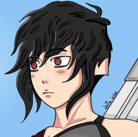

Ghost Sniper
- Codinome: Ghost Sniper
- Nome: Evellynn
- Idade: 23
- Armas: Sniper (Barrett.50) & Pistola (M1911).
HISTÓRIA
Ghost Sniper. Seu Nome real é Evelyn de codinome Ghost Sniper. Uma garota de 23 anos, mas desde criança, em sua vila, era conhecida por sua enorme precisão ao ajudar seus pais a caçar animais, mas conforme foi crescendo seu ambiente foi ficando pequeno demais para suas habilidades, então decidiu sair em busca de novos desafios em direção a uma jornada na busca de se conhecer melhor, e neste percurso, conheceu ama dupla cruel que precisava ser contida, eliminada. Apenas ela poderia de fato entender a sua razão de ser ao resolver este problema com seu talento, perspicaz eliminar estes seres cruéis de uma sociedade fragilizada.
- Ela equipa um silenciador em sua arma e seus próximos disparos não causam barulho.
- Evelyn pega de suas costas uma sniper feita por si mesma que tem somente um tiro super potente.
Habilidades
- Sua lente é ativada podendo enxergar calor através das paredes.